As its name implies, Lazy Bot has been optimized to do very little. This is a design feature and not a bug. Once a minute, Lazy Bot lurches forward and then comes to a stop. This works thanks to a magnet-activated reed switch and a small magnet attached to the second hand of a clock. When the clock’s second hand with the magnet passes over the reed switch, the bot turns on for just a few seconds. In this way, Lazy Bot is highly effective at the task it has been assigned. I can envision a day in the not-so-distant future when robots become even more competent at slacking off than people.
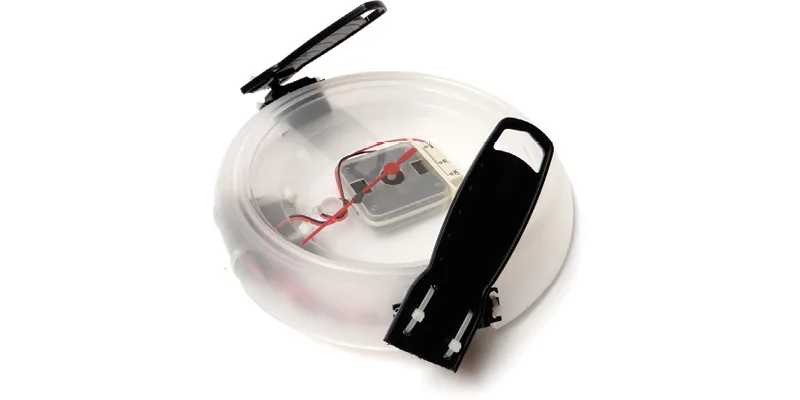
Tools and Supplies
- Two continuous-rotation servo motors with the controllers removed
- Two 1½-inch putty knives
- Round wall clock
- Reed switch
- Hacksaw
- Small disc magnet
- Shrink tube
- A 3 × AA battery holder
- Three AA batteries
- Assorted zip ties
Lazy Overview
Lazy Bot is made from a simple circuit built around the body of a clock. Before you start building it, make sure you have modified the continuous servo motor for direct drive (Chapter 4) or are using one of the geared motor alternatives, as outlined in Appendix A. The next step is to take apart the clock face and set aside all the pieces. Once you can access the inside of the clock without obstructions, you’ll attach the reed switch and batteries. You’ll then modify the clock’s body so you can attach the motors and their arms. After all of the components are in place, you’ll be able to complete the wiring of the circuit. The last major step will be attaching a magnet to the second hand and reinstalling it inside the body of the clock. You can then put the clock’s protective cover back on if you like.
Constructing Lazy
Step 1. Remove the front cover from the clock. Carefully remove the clock hands from the movement (clock mechanism) and then remove the clock face.
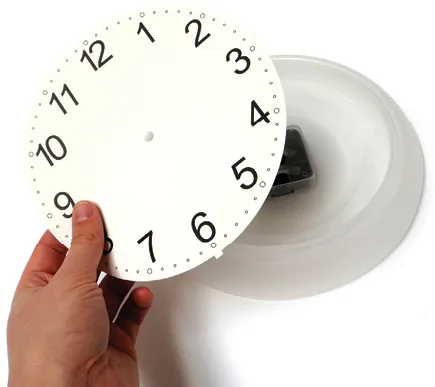
Step 2. Attach a red wire to the center terminal of the reed switch and a black wire to the outer common terminal.
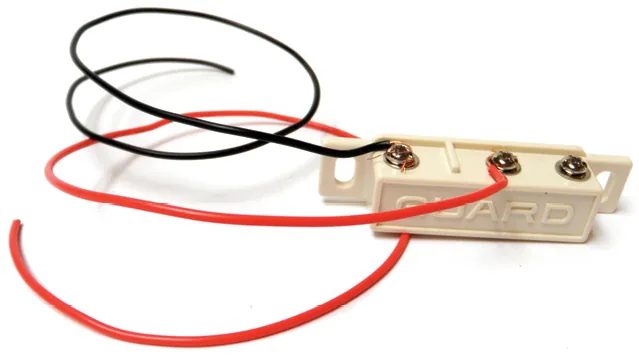
Step 3. Zip-tie the reed switch to the inside of the clock, such that it is strapped around the clock movement case and the terminals are facing down.
Step 4. Find a place to secure the battery holder on the inside of the clock body. Make marks on each side of the battery holder so that when you drill holes, you’ll be able to zip-tie the battery holder to the clock. Also, mark an extra hole through which you can pass the reed switch wires.
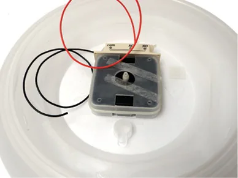
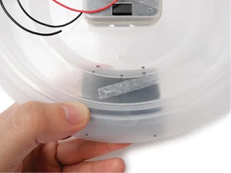
Step 5. Drill all of your marks with a 3/16-inch drill bit.
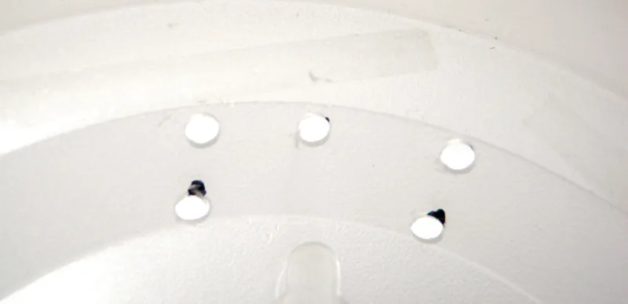
Step 6. Pass the wires from the reed switch through the extra hole you just marked and drilled. If possible, secure the wires by tying them around a part of the clock body or by tying them into a knot larger than the hole.
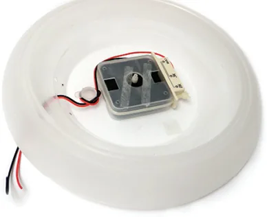
Step 7. Put batteries in the battery holder. You can optionally place a piece of tape over one of the wire leads until you are ready to use the wires. This will prevent the wires from crossing.
Step 8. Zip-tie the battery holder to the clock body.
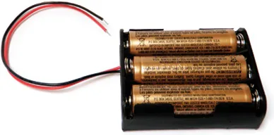
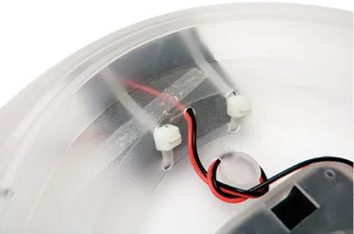
Step 9. Place the clock face back on the clock body. Make two marks on the outer body of the clock, between 2 and 3 o’clock, to indicate the width of the servo body. Make similar marks between 9 and 10 o’clock.
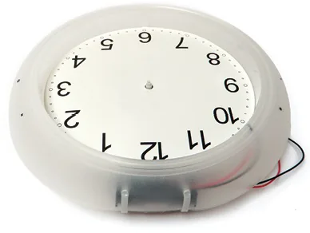
Step 10. Where you made the marks, use a hacksaw and cut out two rectangles just large enough to pass the bodies of the servo motors through.
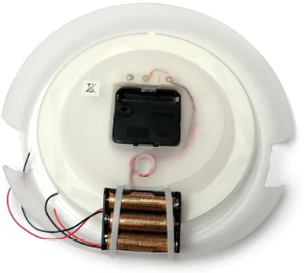
Step 11. With a hacksaw, trim away about 11/2 inches from the scraper ends of the plastic putty knives. You should be left with just the handles.
Step 12. Remove the servo horns from the motor shafts and set the screws aside somewhere safe.
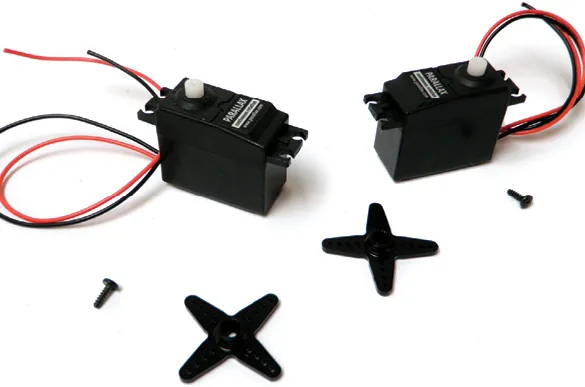
Step 13. Drill a 1/8-inch hole in each of the outer ends of the servo horn. Repeat on the other servo horn.
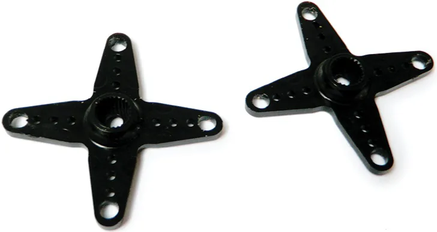
Step 14. Use a servo horn as a drilling guide for making four mounting holes near the sawed-off edges of the plastic putty knives.
Step 15. Mount the servo horns back onto the motor shafts.
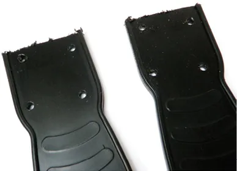
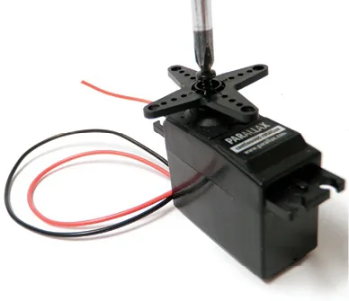
Step 16. Insert the servo motors into the holes you made in the side of the clock body. Use the servo mounting brackets as drilling guides to make mounting holes in the clock body.
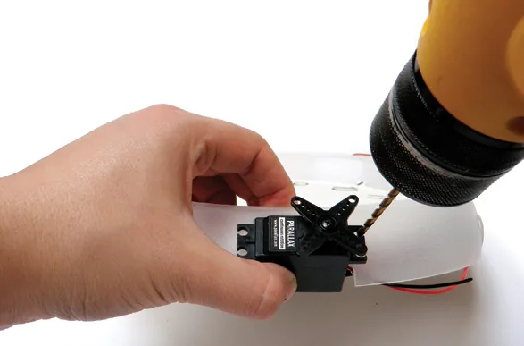
Step 17. Zip-tie the motors to the clock body, such that both of the servo horns are closer to 12 o’clock.
Step 18. Zip-tie the plastic putty knives to the servo horns.
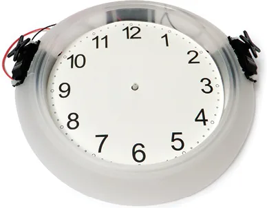
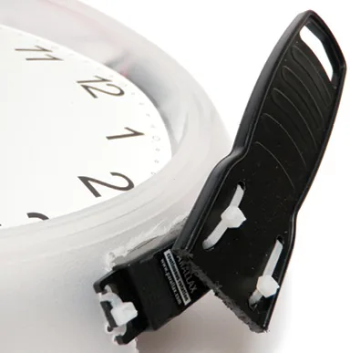
Step 19. Attach your disc magnet to the underside of the clock’s second hand with heat-shrink tubing in such a way that the magnet will pass over the reed switch when put back onto the clock movement. If you don’t have heat-shrink tubing, a little piece of tape should do.
Step 20. You can now remove the clock face again if you would like. More important, put the second hand back onto the clock movement.
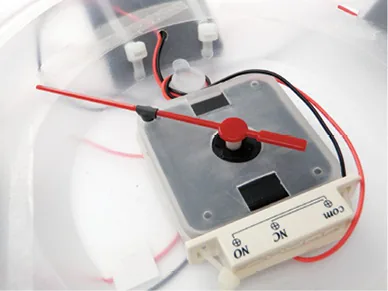
Step 21. Solder the red wire from the reed switch to the red wire of the battery holder. Solder the black wire from the reed switch to the black wire from one of the servos and the red wire from the opposite servo.
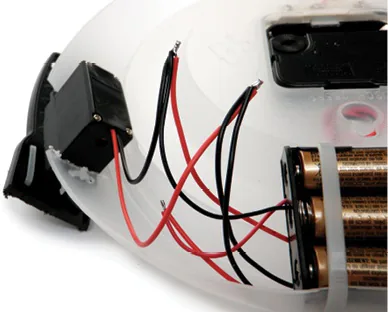
Solder the black wire from the battery holder to the remaining two free servo wires.
Step 22. Zip-tie all the wires together so that the slack is pulled taut and none of the solder connections can cross.
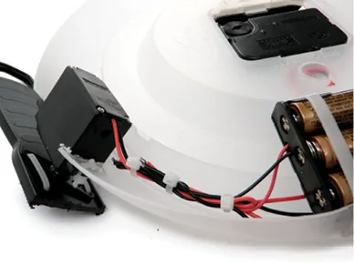
Step 23. Put the front cover back onto the clock to protect the second hand.
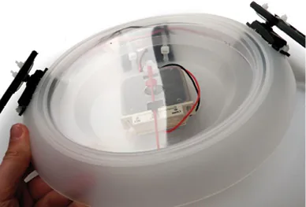
Step 24. Insert a fresh (not partially drained) battery and wait. When the second hand passes over the reed switch, the bot will wake up for a moment and lurch its way into your heart.
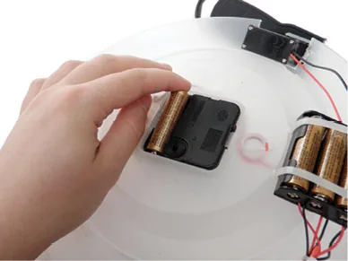